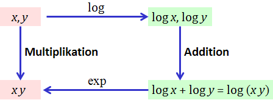

1. Multiplikation durch Addition
2. Binäre Multiplikation
3. Parallele Multiplikation
4. Karatsuba-Multiplikation
Auch scheinbar einfache Algorithmen lassen sich oft noch optimieren.
In dieser Präsentation untersuchen wir, ob die aus der Schule bekannte
schriftliche Multiplikation noch Verbesserungspotenzial hat.
Falls Sie sich noch an das schriftliche Rechnen in der Schule erinnern oder jemals in die Verlegenheit kamen, nur mit Bleistift und Papier eine größere Multiplikation durchzuführen, werden Sie ein Gefühl dafür haben, dass Multiplizieren viel aufwendiger ist als Addieren. Woran liegt das?
Nehmen wir einmal an, Sie können das kleine Einmaleins auswendig
und damit zwei einstellige Zahlen ebenso schnell multiplizieren wie addieren.
Nun probieren Sie bitte einmal, zwei vierstellige Zahlen schriftlich
zu addieren und zu multiplizieren.
Sieht Ihr Zettel etwa so aus:
1234 1234·5678
+5678 ─────────
──── 9872
6912 8638
7404
6170
─────────
7006652
Wie verhält sich die Rechenzeit zur Größe der Zahlen beim schriftlichen Multiplizieren?
Wir haben jede Ziffer des linken Faktors
mit jeder Ziffer des rechten Faktors multipliziert.
Im Beispiel haben wir 4·4 = 16 Einzelmultiplikationen durchgeführt.
Für das Produkt zweier n-stelliger Zahlen brauchen wir also n²
einzelne Multiplikationen. Dazu kommt noch das Aufaddieren am Ende, das aber
am gesamten Rechenaufwand bei großen Zahlen kaum eine Rolle spielt.
Die Zeit ist demnach proportional zum Produkt der Längen beider Zahlen.
Zum Vergleich: Beim schriftlichen Addieren zweier n-stelliger Zahlen
braucht man nur n Additionen von einzelnen Ziffern (und maximal noch einmal
so viele Additionen für die Überträge).
Die Rechenzeit steigt hier also nur linear mit n an!
Die relative Einfachheit der Addition schlägt sich auch in der Geschichte
der mechanischen Rechenmaschinen nieder. Bevor in den 1970er-Jahren der
Taschenrechner seinen Siegeszug antrat, waren preiswerte
mechanische Additionshilfen weit verbreitet. Maschinen,
die auch multiplizieren konnten, waren dagegen sehr teuer und langsam.
Das nebenstehende Bild zeigt meine erste, vom Taschengeld erworbene
Rechenmaschine.
Das Geheimnis dieser Addiatoren war eine Doppelzahnstange (links im Bild blau eingezeichnet), in die ein Stift gesteckt wurde, um die Ziffern zu verschieben. Um z.B. im linken Bild 30 zu addieren, steckt man den Stift in das mit 3 markierte Loch der hervorgehobenen Zehnerstange und zieht ihn bis zum unteren Ende. Wenn man aber z.B. 70 addieren möchte, ist das entsprechende Loch rot markiert. Das bedeutet, dass man nicht nach unten schieben darf (sonst käme man ja aus dem erlaubten Ziffernbereich bis 9 heraus, sondern nach oben. Statt 70 zu addieren, subtrahiert man also 30 (=100-70) und korrigiert den Fehler, indem man anschließend 100 addiert. Das geht aber in einem Rutsch durch den oben umgebogenen Weg!
Wegen der Unerschwinglichkeit von Multiplikationsmaschinen hat man sich früher beholfen, indem man die Multiplikation mit Hilfe von Logarithmen auf die Addition zurückgeführt hat.
Die folgende Abbildung zeigt das Prinzip:

Statt die Multiplikation x·y direkt durchzuführen, berechnet man die Logarithmen von x und y, addiert diese und wendet auf die Summe die Umkehrfunktion (Exponentialfunktion) an, um das Ergebnis zu erhalten.
In der Praxis wurden deshalb
Logarithmentafeln
zur Basis 10 gedruckt.
Hier sehen Sie einen Auszug aus einer vierstelligen Logarithmentafel:
| 0 | 1 | 2 | 3 | 4 | 5 | 6 | 7 | 8 | 9 | |
|---|---|---|---|---|---|---|---|---|---|---|
| 300 | 4771 | 4773 | 4774 | 4776 | 4777 | 4778 | 4780 | 4781 | 4783 | 4784 |
| 301 | 4786 | 4787 | 4789 | 4790 | 4791 | 4793 | 4794 | 4796 | 4797 | 4799 |
| 302 | 4800 | 4802 | 4803 | 4804 | 4806 | 4807 | 4809 | 4810 | 4812 | 4813 |
| 303 | 4814 | 4816 | 4817 | 4819 | 4820 | 4822 | 4823 | 4824 | 4826 | 4827 |
| 304 | 4829 | 4830 | 4832 | 4833 | 4834 | 4836 | 4837 | 4839 | 4840 | 4842 |
| 305 | 4843 | 4844 | 4846 | 4847 | 4849 | 4850 | 4852 | 4853 | 4854 | 4856 |
| 306 | 4857 | 4859 | 4860 | 4861 | 4863 | 4864 | 4866 | 4867 | 4869 | 4870 |
| 307 | 4871 | 4873 | 4874 | 4876 | 4877 | 4878 | 4880 | 4881 | 4883 | 4884 |
| 308 | 4886 | 4887 | 4888 | 4890 | 4891 | 4893 | 4894 | 4895 | 4897 | 4898 |
| 309 | 4900 | 4901 | 4902 | 4904 | 4905 | 4907 | 4908 | 4909 | 4911 | 4912 |
Früher war die Berechnung solcher Tafeln mit ungeheuren Mühen verbunden. So verbrachte der Mathematikprofessor Henry Briggs sieben Jahre damit, Logarithmen zur Basis 10 zu berechnen. Heute bräuchte er dazu nur noch auf die folgenden zwei Knöpfe zu klicken:
printTable(10,10,
lambda i,k: "{:0.4f}".format(log(3000+10*i+k, 10))[2:],
rowHeadFn = lambda i: 300+i,
colHeadFn = lambda k: k,
cellAlign = "left",
title = "Logarithmentafel (Auszug)")
In der Tafel oben steht die Hervorhebung für 3,024 = 100,4806, aber auch für 30,24 = 101,4806 oder 3024 = 103,4806 usw.
Der Auszug zeigt 100 von 10000 Logarithmen der gesamten Tafel, die etwa 20 Buchseiten benötigt.
Im praktischen Gebrauch waren auch siebenstellige Logarithmentafeln,
schon ziemlich dicke Wälzer.
Warum hat man denn statt Logarithmentafeln nicht gleich große Multiplikationstafeln gedruckt?
Eine Logarithmentafel ist eindimensional, zu jeder Zahl (in bestimmten Abständen) enthält sie einen Eintrag. Eine Multiplikationstafel dagegen ist zweidimensional: Sie muss zu jedem Paar von Zahlen einen Eintrag enthalten. So würde aus einem handlichen Buch eine riesige Bibliothek!
Sehr naheliegend ist es auch, die Logarithmen direkt auf Linealen aufzutragen und diese grafisch zu addieren. Einen solchen Rechenschieber hatte bis in die siebziger Jahre hinein praktisch jeder Ingenieur. Um z.B. 2·3 zu berechnen kann man die Logarithen von 2 und 3 addieren, indem man die 2 des unteren Lineals an die 1 (log 1 = 0) des oberen schiebt und nun unter der 3 des oberen Lineals das Ergebnis 6 abliest.
Ein Vorteil des Rechenschiebers und der Logarithmentafeln war, dass man die Größenordnung (Zehnerpotenz) der berechneten Zahlen im Kopf haben musste. Die Fähigkeit dazu scheint heute bei manchen Finanzpolitikern verloren gegangen zu sein.
Fortsetzung: Binäre Multiplikation